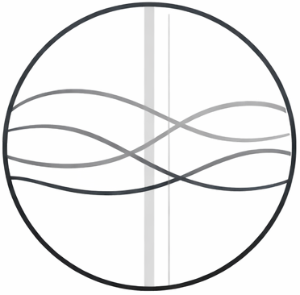
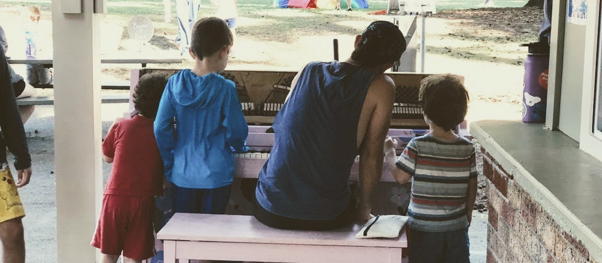

Fine Piano Tuning & Service With HeartFull-spectrum care for your piano
Blending attentive listening, thoughtful craftsmanship, and a genuine love of the instrument.
A piano is a complex, interconnected system. There are a thousand small adjustments that can make a piano sing — and all the parts affect and influence each other.
I see each visit as an opportunity to improve your instrument as a whole — tuning, touch, and tone — with attention to both musical detail and mechanical integrity.
When I arrive, I'll remove the outer case and do a quick evaluation, noting any repairs needed and what improvements can be made. Then I'll do a light clean, make sure your bench legs are tight, and tune. With any time remaining, I'll work on improving touch and tone.
I also love to interact with the humans who play the piano — both large and small — and I'm always eager to share my knowledge and excitement.
Not isolated perfection — but integrated refinement.

I've played piano since I was five — I started university as a jazz piano major and ended up with a degree in mathematics. That combination turns out to be perfect preparation for this work: a piano is both a mechanical system and an expressive instrument, and caring for one well requires both analytical precision and sensitive listening.
I tune primarily by ear, guided by a deep understanding of harmonic structure and acoustics — what I think of as high-tech analog: grounded in craft, informed by science. Equally important is the human side. I value clear communication, respect for your home, and helping you feel more connected to your instrument.
At its best, this work is quiet, attentive, and deeply satisfying.
The essential visit. Tuning, pitch correction if needed, light evaluation, bench check, and light cleaning. The foundation of a healthy instrument.
Everything in Tune & Maintain, plus a thorough action assessment and voicing evaluation. I'll make time for targeted improvements where they matter most.
An extended appointment for instruments that need focused attention. Tuning plus dedicated regulation, voicing work, or minor repairs. Ideal after years without service.
Most pianos benefit from tuning once or twice per year. Instruments that are played frequently, used for lessons, or that experience greater seasonal humidity changes may benefit from tuning twice a year or more.
Yes! Your piano might need a pitch correction or pitch raise to bring it back to standard pitch and restore its intended voice. I include this service at no extra charge, though it does take up some of the time I generally reserve for other improvements.
It's not the playing itself that causes a piano to go out of tune, but rather changes in temperature and humidity, and the settling of the instrument over time. How much a piano is played rarely has a significant impact on its tuning stability.
Give your piano the care it deserves.
Schedule Piano Service